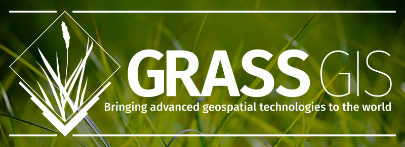
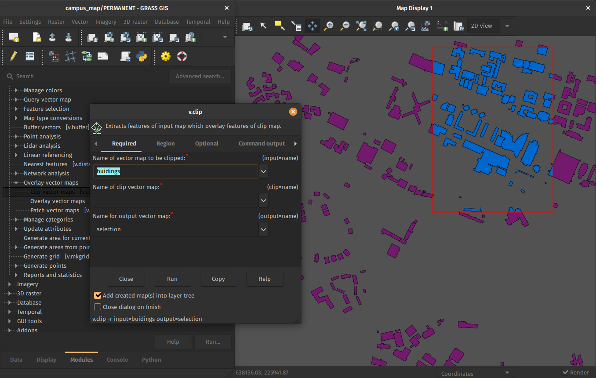
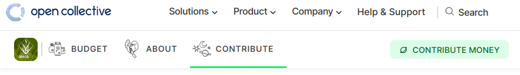

GRASS GIS: Not What You Think
NCSU GeoForAll Lab
at the
Center for Geospatial Analytics
NC State University

FOSS4G NA, Baltimore, October 23-25, 2023
Vaclav (Vashek) Petras
- Research Software Engineer at NC State's Center for Geospatial Analytics
- BS & MS in Geoinformatics, Czech Technical University in Prague, PhD in Geospatial Analytics, NC State
- GRASS GIS: Development Team, Project Steering Committee

Community
Big thanks to the whole community!

What is GRASS GIS?
That's something about grazing, no?
Grassy the Hungry Cow
-----------------------------------
| I'm always hungry for more GRASS! |
-----------------------------------
\ ^__^
\ (oo)\_______
(__)\ )\/\
||----w |
_\|/__\|/__\|/_ || || _\|/__\|/_
Thanks to cowsay.
It's not about smoking weed?
FOSS4G 2006 Conference
Lausanne, Switzerland, September 2006
It was a great success. It was the first joint conference that brought together the different FOSS4G "tribes", merging the GRASS Users conference series, with the Mapserver, EOGEO and Java developers meetings.
— Mitasova (2006): FOSS4G 2006 Conference: The meeting of the tribes in GRASS / OSGeo-News
GRASS GIS is command-line only, no?

GRASS GIS is only a desktop GIS, no?
Interface options
Python
Python API comes with GRASS GIS.
R
rgrass package to use GRASS GIS from R is on CRAN.
QGIS
GRASS tools are available through the Processing Plugin(GUI and Python).

Command Line
- Interactive shell
- One-time execution or batch usage with
--exec
Cloud
- CLI
- Python
- actinia
- OpenPlains
Graphical User Interface
No startup screen
Startup screen was a stumbling block for many first-time users.
Project Loaded on Start
Desktop GRASS GIS starts with a project loaded(last-used or default). 
Streamlined Data Management
New Data tab is a central place to manipulate data in a project.
Location is Becoming a Project
-
/home/joanna/grassdata(database directory, path)-
maryland(location → project)new_highway(mapset, sub-project)
-
Multiple windows
Multiple windows was the only option.Still available as before, but…

Single-window Interface
Now single-window interface is the default.
Happy 40th birthday, GRASS GIS!
Time to clear up some misconceptions related to age
Funding
It’s been around for long, so it must be well-funded
How people imagine a GRASS developer
Well-funded professor thinking about new algorithms
The real GRASS developer
Busy parent debugging some code

When I made the image
NSF grant lead by NC State
- NSF grant awarded to NC State, ASU, NMSU, Yale
- to enhance infrastructure
- to revise contributing guidelines
- to support community building
Note: The NSF program is aiming at sustainability, not adding features or fix bugs.

New Funding Options on OpenCollective
- Donation (one-time, any amount), Supporter starts at 10 USD/month, Sponsor starts at 500 USD/year 
- Feedback? Talk to me about being part of the solution!
- T-shirt fundraiser test: Ask me after the talk for details!

Releases
There are no new releases, or?
- 8.3.1 Current, October 2023 Current version for everyday user
- 8.4.0 Preview, Daily Latest reviewed functional code
- 7.8.8 Legacy, August 2023 Maintained legacy version for some production systems
Minor Releases Bring New Things: T or F?
Minor Releases
- major.minor.micro
- micro (x.y.z) brings fixes,
- minor (x.y) brings features,
- major (x) brings features and possibly backward incompatible changes

Code
C and C++ Code Quality
- Issues reported by GCC and Clang such as dangling-else, discarded-qualifiers, format, … fixed.
- Even more to come in 2024.

Python
- Code formatted with Black.
- Flake8 enabled, 2/3 fixed.
- Pylint partially enabled.
- Aiming at close-to-default configuration for 2024.

Features
Features long-requested from industry now available and mature (and usually overlooked by desktop users).Managing GRASS session in Python
Revamped GRASS session makes it easier to use GRASS tools from Python.Command line batch mode with --exec
Streamlined usage of GRASS tools through system calls.
grass /grassdata/nc_spm/work1 --exec \
r.viewshed input=elevation \
output=viewshed coordinates=642964,222890
Command Line Description with --json
- Translates command line parameters to JSON.
- Used by actinia to integrate with GRASS GIS.
- Seeking feedback for other use-cases.
r.viewshed \
input=elevation \
output=viewshed \
coordinates=642964,222890 \
--json
Data Analytics Workflows
See the separate talk!
Caitlin Haedrich
Computational Notebooks for Reproducible Geospatial Computation in Research and Education
October 25
2:00 – 2:30 PM
Poe Room
Community Meeting 2023
GRASS GIS birthday celebrated by advancing CMake build, 8.3.0 release, … grass.osgeo.org > News > Report of the GRASS GIS Community Meeting in Prague
grass.osgeo.org > News > Report of the GRASS GIS Community Meeting in Prague
Mentoring and Student Grants Program
- Mentoring to integrate GRASS GIS into your workflows
- Student grants to contribute to GRASS GIS
Join a Working Group
-
Groups:
- geoprocessing engine
- being a good neighbor in open source ecosystem
- documentation
- community engagement and promotion
- See wiki for details!


Ask a question, get a special sticker.
vpetras@ncsu.edu,
@vaclavpetras, @wenzeslaus
wenzeslaus.github.io/grass-gis-talks